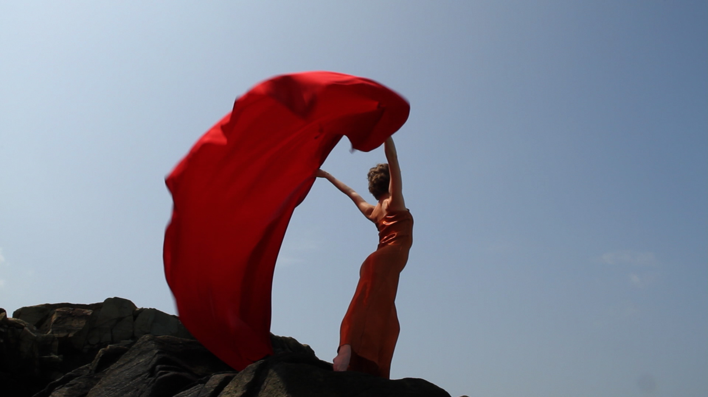
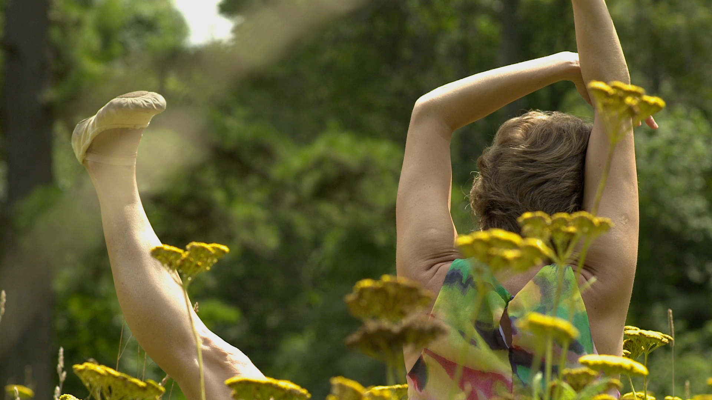
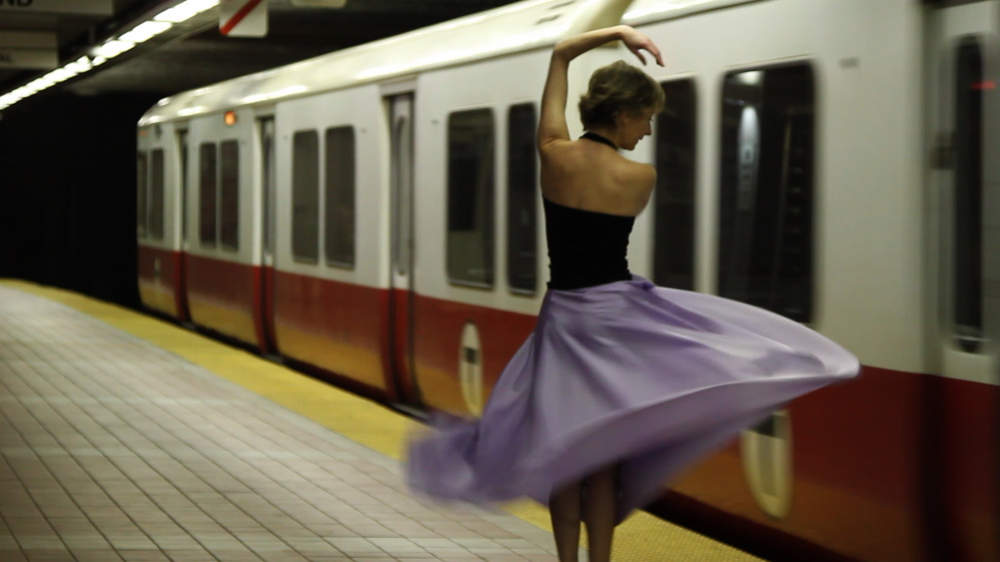
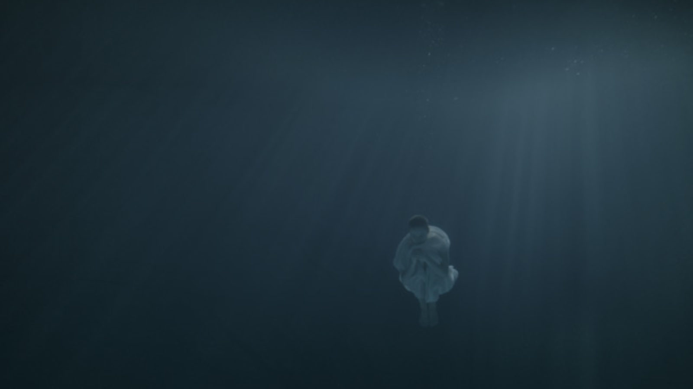

Change is in the air.
-
Prima is a moving portrait of Larissa Ponomarenko, prima ballerina of the Boston Ballet, who has recently hung up her pointe shoes to pursue new avenues of self-expression. Through flashbacks to her journey from a difficult childhood and rigorous ballet training in Russia to her emergence as the prima ballerina of a leading American ballet company, the film captures Larissa’s uniqueness as an artist of many emotional colors. Now, as she transitions from prima ballerina to mentor to aspiring dancers, she finds a way to reinvent herself. -
- Dance on Camera: 2014 Official Selection
- Boston International Film Festival: Official Selection
- Mesquite's Film Festival: Best of Fest
- Oklahoma Dance Film Festival: 2013 Official Selection
- New Filmmakers of New York: 2014 Official Selection
- Moondance International Film Festival: 2014 Selected Film
- DOCUTAH - Southern Utah International Documentary Film Festival: 2014 Official Selection
- Vo'Arte: Internation Festival of Video: Official Selection
Trailer
Screenings
Gallery





